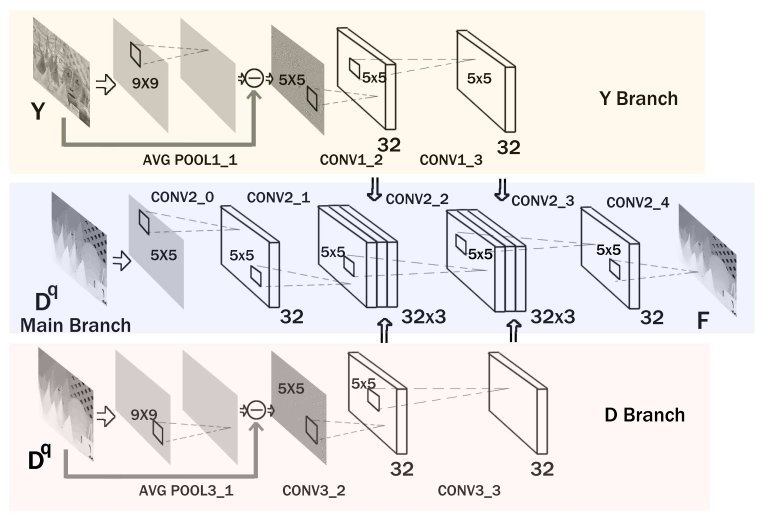
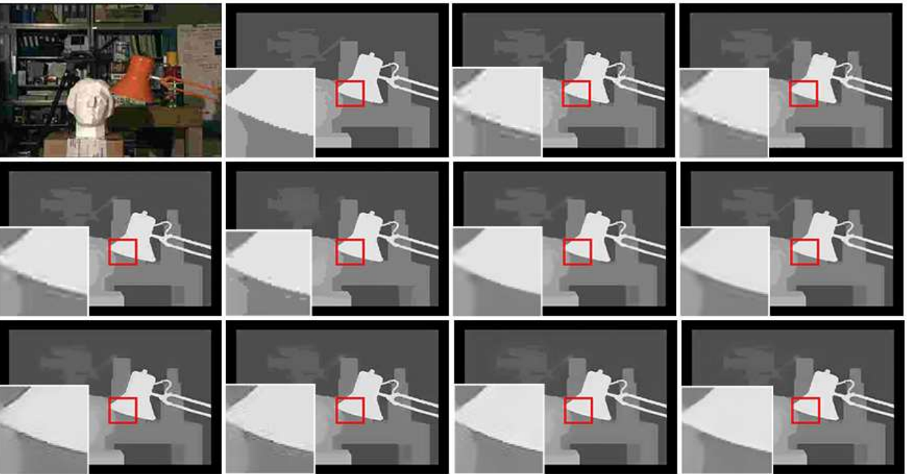
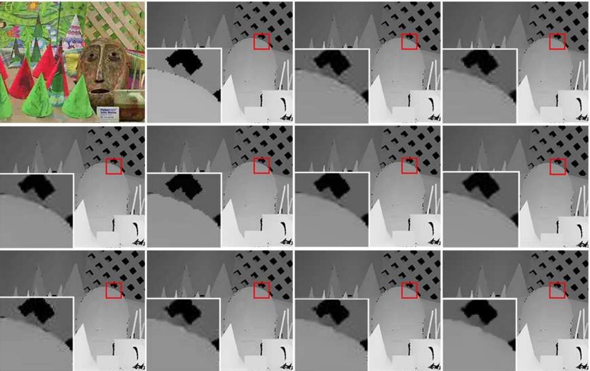
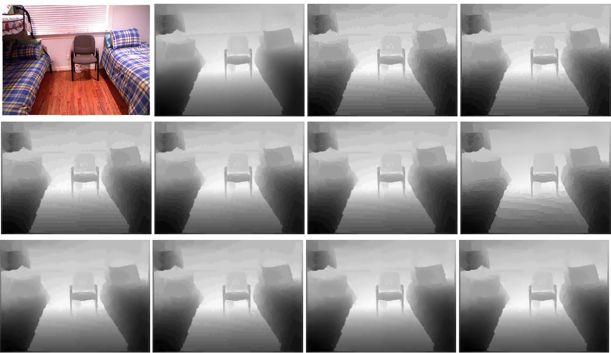

Xu Wanga, Pingping Zhanga, Yun Zhangc, Lin Mad,Sam Kwongb, Jianmin Jianga
aCollege of Computer Science and Software Engineering, Shenzhen University, Shenzhen 518060, China
bDepartment of Computer Science, City University of Hong Kong, Kowloon,Hong Kong
cShenzhen Institutes of Advanced Technology, Chinese Academy of Sciences,Shenzhen, China
dTencent AI Lab, Shenzhen, China
 The architecture of proposed DIG-Net. The overall network contains three branches, named as Y-, D- and M-branch. The feature maps of Y-, D- and M-branches are combined as the input of next layer through the concatenation operation.
Performance comparison of compression artifacts reduction algorithms in terms of PSNR (dB) on synthetic datasets.
| Model | q = 10 | q = 20 | q = 30 | q = 40 |
|---|---|---|---|---|
| JPEG | 32.30 | 34.71 | 36.17 | 37.20 |
| Shen[32] | 32.78 | 35.26 | 36.76 | 37.80 |
| NLR[33] | 32.69 | 35.30 | 36.89 | 38.03 |
| Ham[34] | 33.91 | 36.30 | 37.84 | 38.94 |
| SA-DCT[14] | 33.40 | 35.81 | 37.37 | 38.59 |
| Liu[8] | 33.79 | 36.44 | 38.23 | 40.01 |
| ARCNN[6] | 34.51 | 37.63 | 39.35 | 40.46 |
| RED-Net[35] | 34.76 | 39.68 | 42.45 | 44.07 |
| IG-Net[7] | 35.71 | 39.98 | 42.88 | 44.50 |
| Proposed-noY | 35.63 | 39.98 | 42.98 | 45.04 |
| Proposed-cY | 35.75 | 40.19 | 43.26 | 45.30 |
| Proposed | 35.88 | 40.19 | 43.27 | 45.30 |
Performance comparison of compression artifacts reduction algorithms in terms of PSNR (dB) on real datasets.
| Model | q=10 | q=20 | q=30 | q=40 |
|---|---|---|---|---|
| JPEG | 36.52 | 40.56 | 42.54 | 43.84 |
| Shen[32] | 37.46 | 41.09 | 42.41 | 43.13 |
| NLR[33] | 37.26 | 41.89 | 43.82 | 44.93 |
| Ham[34] | 38.64 | 42.28 | 43.31 | 43.89 |
| SA-DCT[14] | 38.68 | 42.74 | 44.42 | 45.39 |
| Liu[8] | 36.40 | 36.95 | 37.15 | 37.20 |
| ARCNN[6] | 39.69 | 43.34 | 45.00 | 46.06 |
| RED-Net[35] | 39.09 | 43.75 | 45.30 | 46.28 |
| IG-Net[7] | 40.58 | 43.93 | 45.96 | 47.02 |
| Proposed | 40.71 | 44.24 | 45.96 | 47.00 |
 (a) Color Image (“Tsukuba”), Ground truth , JPEG Compression with q=10: 31.03dB, Shen: 31.59dB, NLR: 31.41dB, Ham: 33.15dB, SA-DCT: 33.09dB, Liu: 32.52dB, AR-CNN: 33.71dB, RED-Net: 34.41dB, IG-Net: 35.02dB, DIG-Net: 35.06dB.
 (b) Color Image (“Cones”), Ground truth, JPEG Compression with q=40: 33.79dB, Shen: 34.22dB, NLR: 34.47dB, Ham: 35.97dB, SA-DCT: 35.76dB, Liu: 35.45dB, AR-CNN: 37.65dB, RED-Net: 41.06dB, IG-Net: 40.98dB, DIG-Net: 41.87dB.
 Qualitative comparisons of compression artifact reduction models. From left to right and up to down, Color Image and Ground truth (“1056-th sample of NYU-Depth V2 dataset”), JPEG Compression with q=10: 36.34dB, Shen: 37.68dB, NLR: 37.19dB, Ham: 39.00dB, SA-DCT: 38.89dB, Liu: 35.92dB, AR-CNN: 40.07dB, RED-Net: 39.36dB, IG-Net: 40.83dB, DIG-Net: 40.97dB.
@article{
wang2018deep,
title={Deep Intensity Guidance Based Compression Artifacts Reduction for Depth Map},
author={Wang, Xu and Zhang, Pingping and Zhang, Yun and Ma, Lin and Kwong, Sam and Jiang, Jianmin},
journal={Journal of Visual Communication and Image Representation},
year={2018},
publisher={Elsevier}
}